De site bestaat uit drie delen voorafgegaan door een korte Inleiding:
Het doel hiervan was mensen met verschillende levensbeschouwelijke achtergrond bij elkaar te brengen om van gedachten te wisselen over de weg naar vrede in de wereld en in zichzelf. Deze bijeenkomsten stonden los van iedere geestelijke of wereldlijke instelling. Wel was nadrukkelijk het uitgangspunt: God grondlegger der wereld, derhalve onoverwinnelijk (God Founder of the World, therefore Invincible; Gott Grnder der Welt und deshalb unbesieglich; Dieu fondateur du monde et par consquent invincible). Er werden per keer honderd tot tweehonderd mensen uitgenodigd. De bijeenkomsten duurden drie dagen.
Tijdens deze ontmoetingen werden inleidingen gehouden door bekende en minder bekende sprekers uit binnen- en buitenland [1]. Daarna vond een vrije gedachtewisseling tussen alle deelnemers plaats. De inleidingen zijn in gestencilde vorm bewaard en te raadplegen bij de Bijzondere Collecties van de Universiteit van Amsterdam [2].

Deel I
J.W. Kaiser
J.W. Kaiser bereidde, met enkele medewerkers, de Oude Loo ontmoetingen en tot zijn overlijden in 1960 ook de Open Veld bijeenkomsten voor. Hij verzorgde ook enkele inleidingen en sprak veelal het openings- of het sluitingswoord. Richtlijnen voor zijn werk kreeg hij door inspiratieve mededelingen van Margaretha Hofmans. De tekst van een aantal door hem uitgesproken inleidingen zijn destijds in druk verschenen en worden hier opnieuw toegankelijk gemaakt. Het betreft de volgende uitgaven:


Deel II
Margaretha Hofmans
Margaretha Hofmans ontving in 1946 een inspiratieve opdracht om, als mensen zich daartoe meldden, menselijke ziekten en noden op te dragen aan de verlossende liefde in de schepping. Zij nam samen met onder anderen J.W. Kaiser deel aan de voorbereiding van de Oude Loo en Open Veld bijeenkomsten. Zij trad niet op als inleider maar nam deel aan de gedachtewisseling.
Daarnaast verzorgde zij van 1960 tot 1967 een inleidend woord voor maandelijkse bijeenkomsten die vanaf oktober tot april in het gebouw van de gereformeerde kerk in Baarn plaatsvonden. Aansluitend beantwoordde zij vragen van de deelnemers.
Deze bijeenkomsten begonnen als zgn. ‘Economische vraagavonden’ voor een aantal geïnteresseerde mannen. Het thema ‘economie’ verdiepte zich daarbij tot de wezenlijke bestaansgrond van de mens. In aansluiting aan deze Economische avonden werden vanaf 1961 maandelijks ook bijeenkomsten voor vrouwen georganiseerd (zgn. ‘Damesavonden’). Een vijftal malen vond ook nog, voor beide groepen gezamenlijk, een bezinning op Kerstmis plaats. De inleidingen en de gedachtewisselingen van beide series vraagavonden werden door de zorg van W.J. Baron van Heeckeren van Molecaten (1914 - 2001) tot maart 1961 verkort, en daarna integraal - op de band opgenomen, uitgewerkt en gestencild - ter beschikking van de deelnemers gesteld.
Het totale materiaal van deze bijeenkomsten (51 Economische en 43 Damesavonden) is zo omvangrijk dat op deze site vooralsnog volstaan moet worden met een keuze uit beide series. Deze keuze is in de jaren ‘90 gemaakt door Anneke Engels - van den Broecke (1923 - 2001). Zij begon met de verslagen van de Damesavonden waaraan zijzelf had deelgenomen, en vervolgde met de verslagen van de Economische avonden. De uit deze verslagen samengestelde selectie is, onder de titel ‘Het licht schijnt in de duisternis’, aan het eind van de jaren 1990 in een particuliere oplaag van ca 300 boeken in omloop gebracht en ook op Cd-rom gezet. Deze in Deel II van deze site opgenomen selectie betreft ongeveer een kwart van de beschikbare tekst. De volledige gestencilde verslagen zijn aanwezig bij de Bijzondere Collecties van de Universiteit van Amsterdam. [Zie voetnoot 2]

Deel III
C. Engels
Ir C. Engels nam, met zijn hiervoor genoemde echtgenote, eveneens deel aan de Open Veld bijeenkomsten, als voorbereider en als spreker. Daarnaast verzorgde hij, onder meer, in de jaren 1963 1965 inleidingen voor bijeenkomsten van een kleine groep belangstellenden rondom Mejuffrouw Hofmans, die werden gevolgd door een intensieve uitwisseling tussen de deelnemers.
In deze inleidingen stond de diepere betekenis van symboliek, zoals deze tot uitdrukking komt in mythen, in bepaalde kunstuitingen en in het getal, centraal. Christiaan Engels nam daarbij de symboliek van het getal niet als rekeneenheid maar kwalitatief opgevat voor zijn rekening. Van de inleidingen en gedachtewisselingen tijdens deze getallenochtenden zijn, eveneens door de zorg van W.J. Baron van Heeckeren van Molecaten, gestencilde verslagen gemaakt.
Deze bijeenkomsten begonnen als zgn. ‘Economische vraagavonden’ voor een aantal geïnteresseerde mannen. Het thema ‘economie’ verdiepte zich daarbij tot de wezenlijke bestaansgrond van de mens. In aansluiting aan deze Economische avonden werden vanaf 1961 maandelijks ook bijeenkomsten voor vrouwen georganiseerd (zgn. ‘Damesavonden’). Een vijftal malen vond ook nog, voor beide groepen gezamenlijk, een bezinning op Kerstmis plaats. De inleidingen en de gedachtewisselingen van beide series vraagavonden werden door de zorg van W.J. Baron van Heeckeren van Molecaten (1914 - 2001) tot maart 1961 verkort, en daarna integraal - op de band opgenomen, uitgewerkt en gestencild - ter beschikking van de deelnemers gesteld.
Na zijn pensionering wijdde Christiaan Engels zich geheel aan een diepere verkenning van het reeds genoemde kwalitatieve aspect van het getal. Een bron van inspiratie vormde voor hem zijn betrokkenheid bij de Open Veld ontmoetingen en de getallenochtenden, maar ook het contact dat hij in 1950 zelf had gelegd met de kinderarts Wijnmalen, en dat hij op aanwijzing van Margaretha Hofmans in 1962 hernieuwde. Dr G.P.Wijnmalen (1880 - 1962) had een zeldzame affiniteit met de kwalitatieve betekenis van getallen, maar heeft hierover niet gepubliceerd. Daarnaast werd Christiaan Engels genspireerd door eigen studie van onder andere vrijmetselarij en antroposofie, en reizen gericht op de oude culturen, vooral rondom de Middellandse Zee en India.
Zijn bevindingen heeft hij neergelegd in het boek Merkwaardigheden met betrekking tot De Expressiemogelijkheid van Getallen ook in de oudheid (Een on-mgelijk verhaal).
Dit boek, aan het eind van de jaren 90 en in het begin van deze eeuw in beperkte particuliere oplage in omloop gebracht en ook op Cd-rom toegankelijk gemaakt, bevat drie delen:
Deel A: zonder subtitel
Deel B: Het wonder van de Zuivere Kubiek
Deel C: Het andere gezicht van de wiskunde
Deel III van deze site bevat behalve voorafgaand aan deze drie delen een inleidende toelichting, een inhoudsoverzicht en een uit 2002 daterende samenvatting van de auteur. Een Engelse vertaling van deze drie inleidende teksten volgt na deel C.